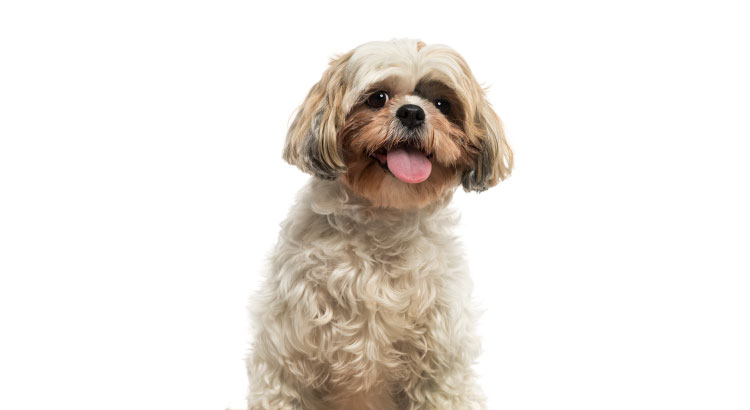
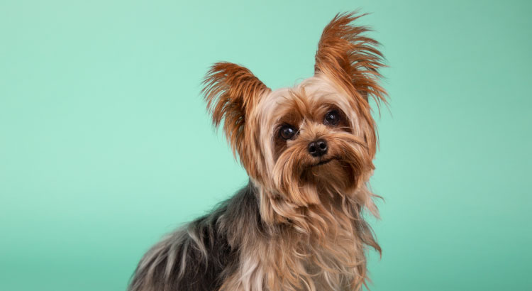
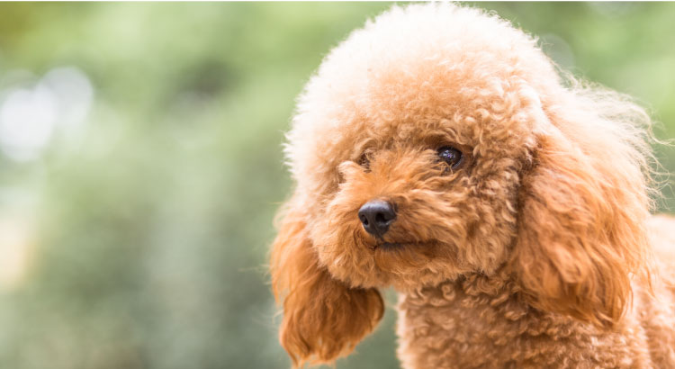
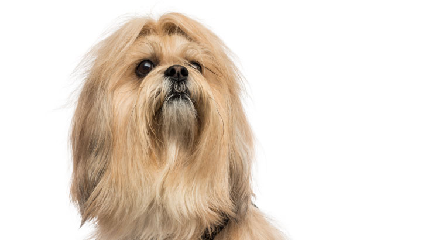
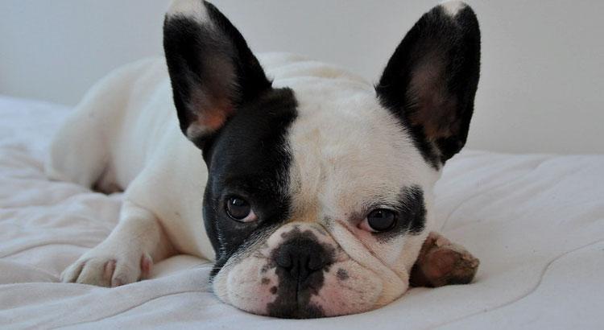
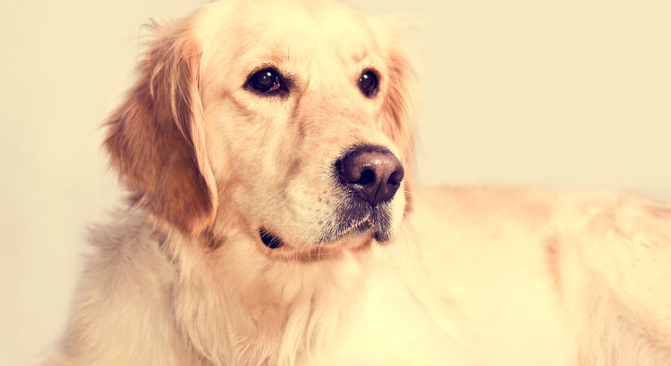
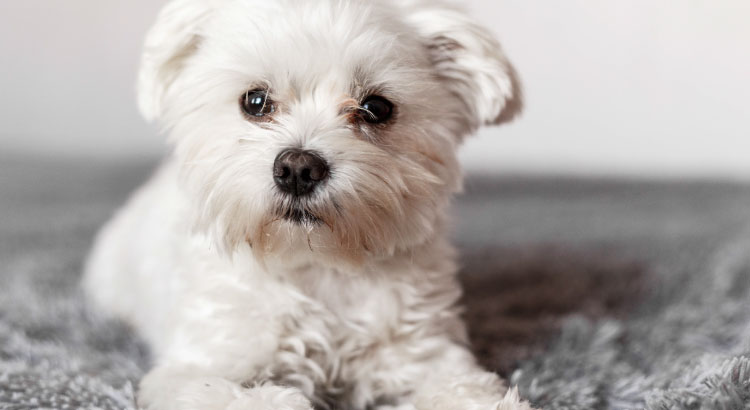
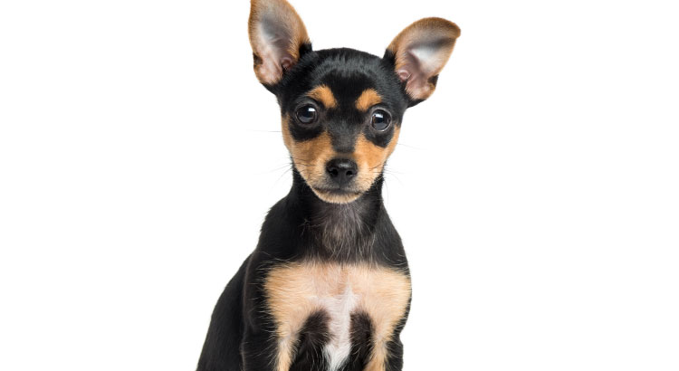

Shih Tzu
Os Shih Tzus estão sempre prontos para receber carinho, são muito dóceis e amigáveis com crianças e outros cães, por isso, são ótimas companhias. Eles se adaptam bem a pequenos espaços, sendo uma escolha frequente de tutores que moram em apartamentos. ⠀

Yorkshire
Os Yorkshires são cães fiéis e carinhosos, mas podem latir muito para estranhos. É preciso ter um cuidado especial na presença de crianças menores, que podem acabar machucando o cão sem querer. A raça mini é considerada de companhia, mas não gosta e nem deve ficar muito tempo no colo, pois a posição pode desencadear dores e problemas na coluna. Mesmo sendo pequeno, o Yorkshire precisa de exercícios para se manter saudável.

Poodle
O Poodle é uma raça de cachorro de origem francesa que pode ter vários portes – mini, toy, standart e gigante – e é um dos cachorros que vivem mais tempo, podendo chegar aos 18 anos. O Poodle toy pode ser um pouco mais agressivo, principalmente com crianças, enquanto o mini tende a latir mais que os outros, mas, no geral, esses cães são dóceis e fáceis de adestrar.

Lhasa Apso
O Lhasa é um cachorro carinhoso e tranquilo, mas alguns podem não se dar muito bem com crianças pequenas. São ótimos cães de companhia e se adaptam bem aos espaços pequenos.
Raça originária do Tibet, sua história é cheia de lendas e espiritualidade. Acreditava-se que, quando um tutor de um Lhasa Apso morria, sua alma reencarnaria em outro cachorro da mesma raça. ⠀

Buldogue Francês
O Buldogue Francês é preguiçoso e ama ficar dormindo. É uma raça de cachorro braquicefálico e, por isso, precisa de alguns cuidados especiais. É um animal muito carinhoso, brincalhão e se dá muito bem com crianças. Porém, pode ser um pouco territorialista e agitado, com tendência a latir bastante, principalmente os machos não castrados.

Golden Retriever
Os Goldens são conhecidos pela simpatia e maciez de seus pelos. Gostam muito de correr e brincar, mas também são ótimos para fazer companhia e não rejeitam um carinho. Apesar de precisarem de atenção e exercícios para se manterem saudáveis, como qualquer outro cachorro, são calmos e ideais para qualquer faixa etária. Uma das melhores raças de cachorro para crianças.

Labrador
Apesar de ser um cachorro grande, o Labrador é alegre, carinhoso e muito dócil. Com muita energia, esses cachorros são ideais para espaços grandes e crianças agitadas, já que precisam de exercício e atenção constantes. Essa raça também é uma ótima companhia para crianças com algum tipo de necessidade especial, como autismo e Síndrome de Down.

Maltês
O Maltês, apesar de dócil com os tutores, pode ser bem ciumento e territorialista, apresentando comportamentos agressivos com pessoas e animais desconhecidos. Além dos cuidados com a pelagem, que tende a embaraçar, necessita de atenção especial, pois tem predisposição a algumas doenças como luxação de patela, problemas hepáticos, cardíacos e alergias na pele. ⠀

Pinscher
Os Pinschers são extremamente territorialistas e ciumentos, o que pode fazer com que fiquem agressivos em algumas situações. Ao menor sinal de desconforto ou desconfiança, podem latir e avançar. Mas também são carinhosos e brincalhões, apesar de não gostarem muito de crianças e preferirem a companhia de tutores mais velhos.
No inverno, sentem muito frio e precisam de cuidados especiais com a temperatura corporal. Fora isso, são cães de muita energia, mas precisam de cuidados com alimentação para evitar a obesidade e a diabetes.
